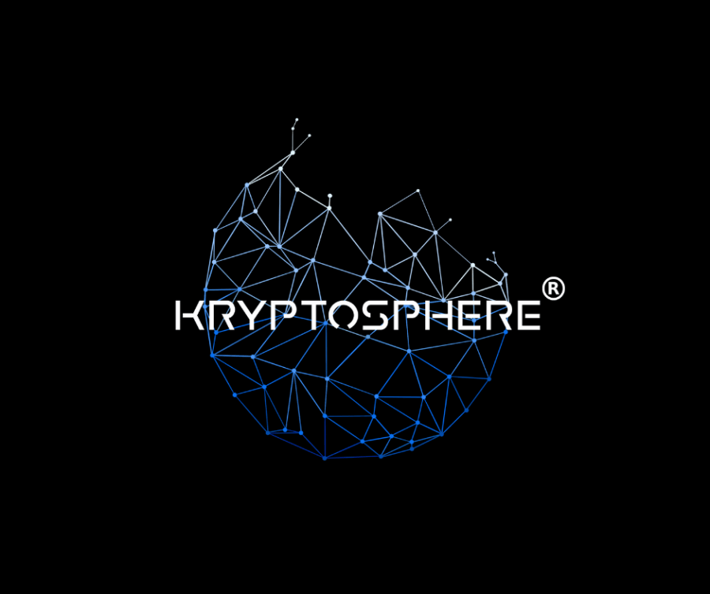

Parcours
Juriste spécialiste des nouvelles technologies et profondément impliqué dans l'écosystème crypto français depuis 2016. Fondateur et administrateur du réseau KRYPTOSPHERE® depuis 2017.
En parallèle d'un cursus complet en classe préparatoire et en école de commerce, j'ai poursuivi des études de droit à l'Université Paris Nanterre puis à l'EHESS pour la réalisation d'un doctorat en droit, financé par l'Imprimerie Nationale.
Ma thèse de doctorat porte sur certaines évolutions règlementaires et informatiques des crypto-actifs, des technologies blockchains et de l'identité numérique décentralisée. Retrouvez certains passages de ma thèse dans Le Figaro.
ExpÉrience

Conception, création, développement et structuration dès 2017 du premier écosystème étudiant en Europe axé sur les nouvelles technologies (Bitcoin, crypto, blockchains, intelligence artificielle et cybersécurité). Expansion nationale puis internationale de 4 à +500 bénévoles actifs, d'une à 9 villes, au sein de +20 écoles de commerce, d'ingénieurs et d'informatique.
Gestion mixe présentielle et distancielle de nombreux étudiants commerciaux et ingénieurs en Europe (France, Londres, Belgique) : structuration juridiques des antennes, gestion financière et comptable, gestion de la stratégie long terme nationale et internationale, partenariats stratégiques, formation interne, développement en France.
Administration juridique, comptable et financière de KRYPTOSPHERE® FRANCE depuis 2017. Depuis sa création, KRYPTOSPHERE® a sensibilisé plus de 150 000 personnes à Bitcoin.